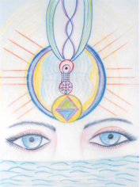

Фазовый Портрет «Дух Земли»

ФП «Дух Земли» был создан в июле 2008 года, на озере Сайма (Финляндия). В физиологической проекции ледниковое озеро Сайма, одно из крупнейших пресноводных озер Европы, выполняет для планеты Земля функцию левой почки. Создание фазового портрета корректирует ее работу.
У каждой живой субстанции есть свое духовное тело. В трудные времена Дух Святой укрывается в водной стихии. Для человека такими органами являются почки, для планеты – сакральные озера. Озеро Сайма – левое Крыло Духа Земли, а на уровне материального его проявления – левая почка планеты. Поэтому ФП одновременно называется и «Дух Земли», и «Дух воды».
ФП способствует процессу гармонизации энерго-информационного состояния природных стихий – воды (иньское начало) и воздуха (янское начало). Основная работа совершается в области круга, расположенного в поле Аджна-чакры. Она же является точкой отсчета для 8-мерной системы координат. На вертикальной оси расположены символы, через которые осуществляются метаморфозы записей во Времени: это символ космической голограммы с информацией об истоке жизни и человека; символика, отображающая деление клетки и зарождение жизни и возводящая этот процесс на квантовый уровень, соответствующий духовному измерению; руна «Аль-Го».
Человек на ФП находится в состоянии безмолвия, сила слова пока не раскрыта.
В Образе Человека объединены мужское и женское начала через соответствие глаз (один глаз – женский, другой – мужской). В ледниковом озере Сайма сохранилась «вложенная информация» о совершенном гармоничном человеке, и цель коррекции – восстановить то, что было дано по Воле Творца.